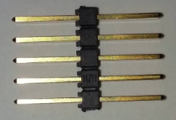
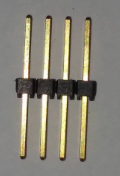
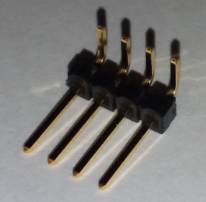
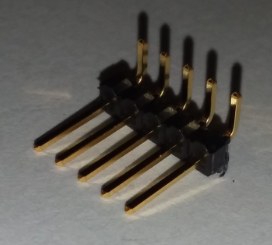
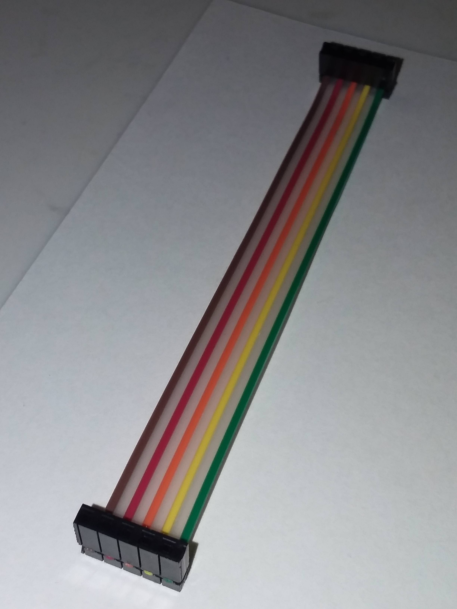
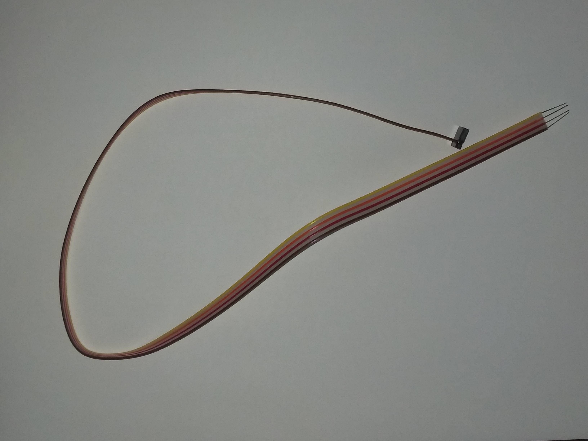

WWW.TRASHROBOT.ORG
WIRE
SAMTEC CONNECTORS
TSW-105-16-G-S: 5 PIN STRAIGHT HEADER

TSW-104-16-G-S: 4 PIN STRAIGHT HEADER

TSW-104-25-G-S-RA: 4 RIGHT ANGLE HEADER

TSW-105-25-G-S-RA: 5 RIGHT ANGLE HEADER

IDSS-05-D-04.00: 4 INCH, FIVE WIRE RIBBON CABLE, CONNECTORS BOTH ENDS

IDSS-04-S-20.00-T-ST2: 20 INCH, FOUR WIRE RIBBON CABLE, CONNECTOR ONE END, STRIPPED AND TINNED WIRES OTHER END

POWER
FIND "WALL WORT" POWER SUPPLIES OR USB WALL CHARGERS WITH AT LEAST 1 AMP OF CURRENT OUTPUT. FIND OLD USB DEVICES WITH THE
A MALE USB "A" CONNECTOR OF THE KIND YOU PLUG INTO YOUR COMPUTER. CUT/STRIP USB CABLE SO THAT YOU CAN CONNECT TO POWER WIRES.
PLUT USB IN, POWER IT UP, USE VOLT METER TO DETERMINE WHICH IS +5V AND WHICH IS GROUND.